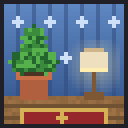

Decoração+
17 blocos de decoração para Minecraft Bedrock
Depois de baixar, toque no arquivo e escolha Minecraft.
Deu problema para baixar? Pegue o
mesmo pacote em .zip
e renomeie a extensão para .mcaddon.
Usa um app importador de zip? Baixe os dois separados:
comportamento
e visual
(ou em .zip:
comportamento,
visual).
Como instalar no tablet
- Toque no botão verde acima para baixar.
- Abra a pasta Downloads (app "Meus Arquivos") e toque em
Decoracao_Plus.mcaddon. - Escolha abrir com o Minecraft. Ele importa sozinho.
- No mundo: Editar → Pacotes de comportamento → ative Decoração+.
- Os blocos aparecem no criativo, na aba Construção.
O que vem no pacote
- Mármore polido, preto e dourado
- Papel de parede azul, rosa e verde
- Estante decorativa
- Cristal de Luz (ilumina tudo)
- Aquário com peixinho
- Vaso de planta e de flores
- Luminária de teto e abajur
- Mesa de centro
- Almofada
- Tapete de luxo
- Pilar de mármore
Precisa de alguma coisa especial?
Não. Funciona no Minecraft 1.21 ou mais novo, sem ativar nada de experimental.